Black jacket — study after Emporio Armani
2024Study afterWool bouclé

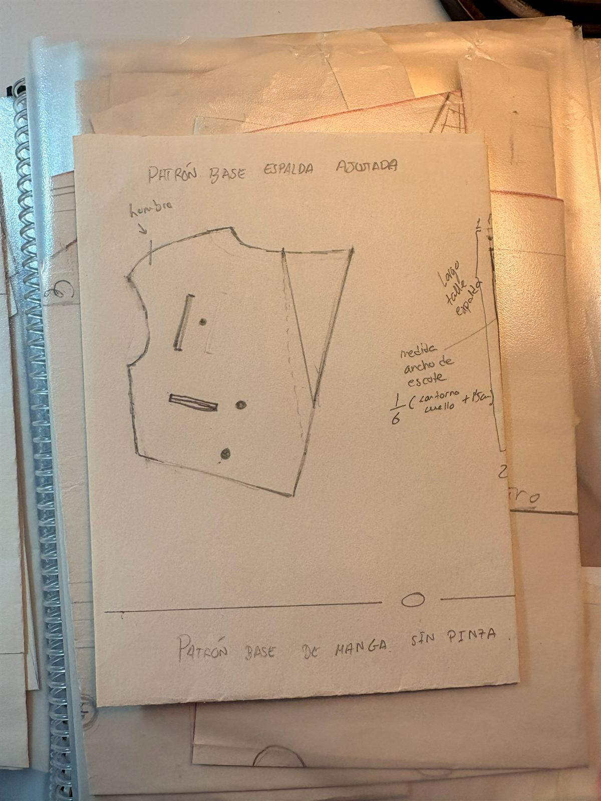
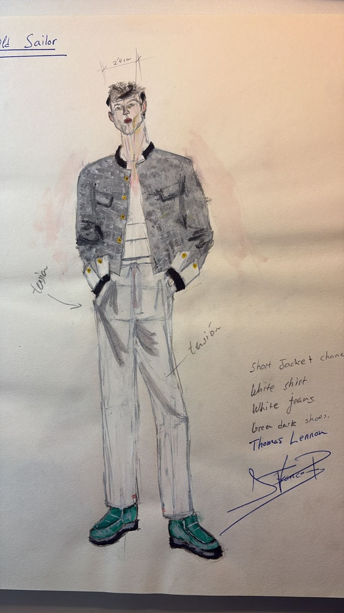
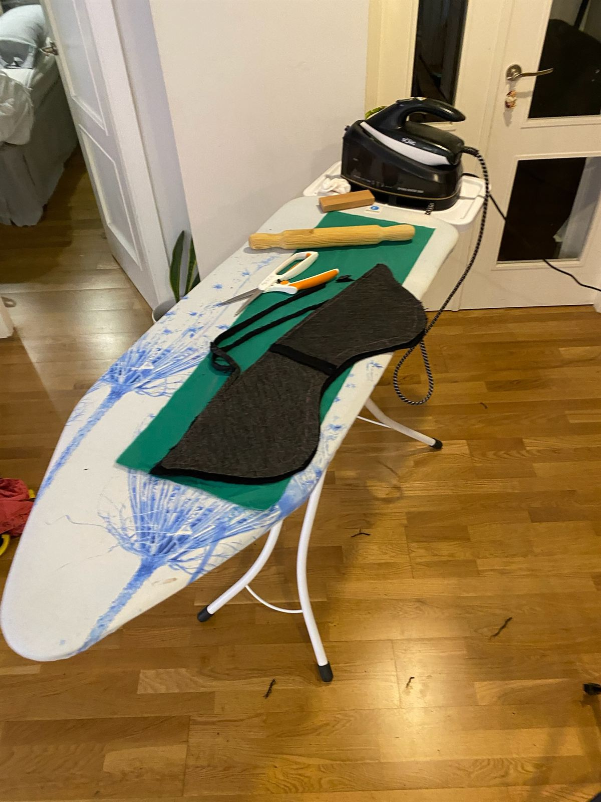
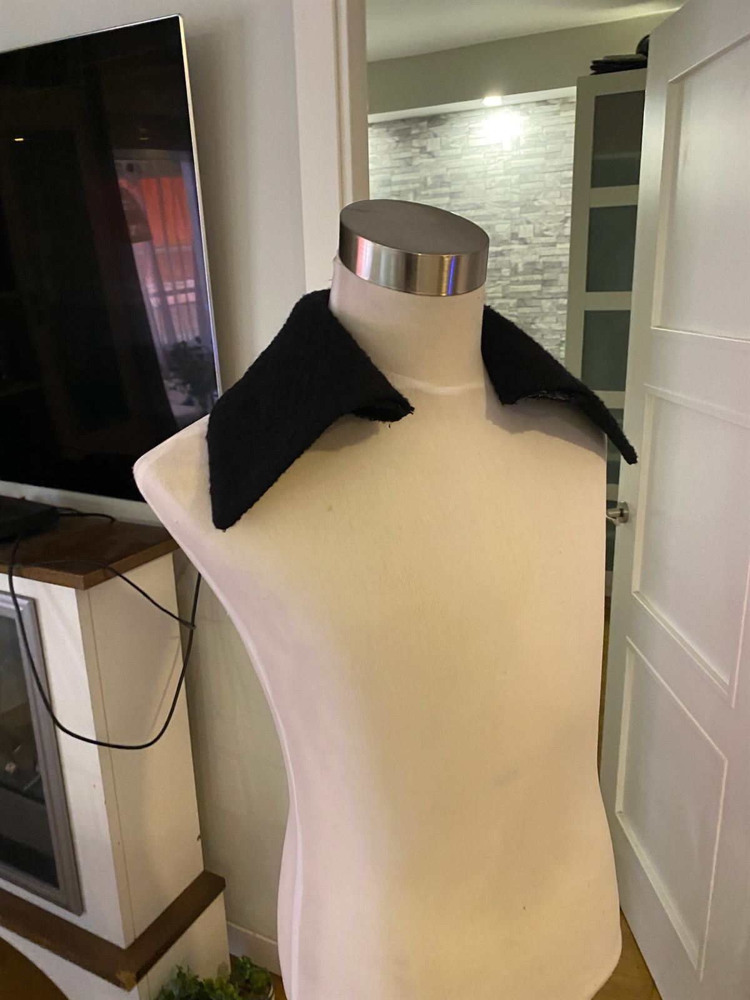
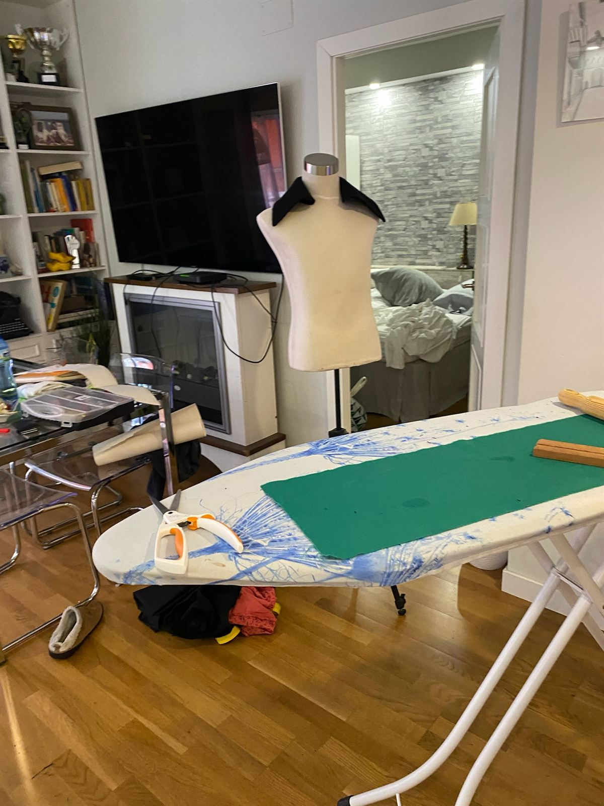
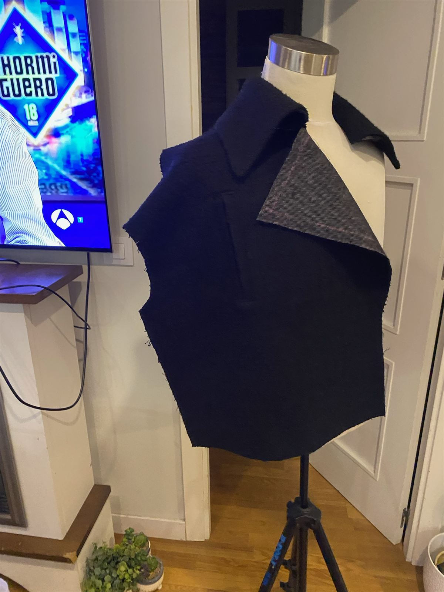

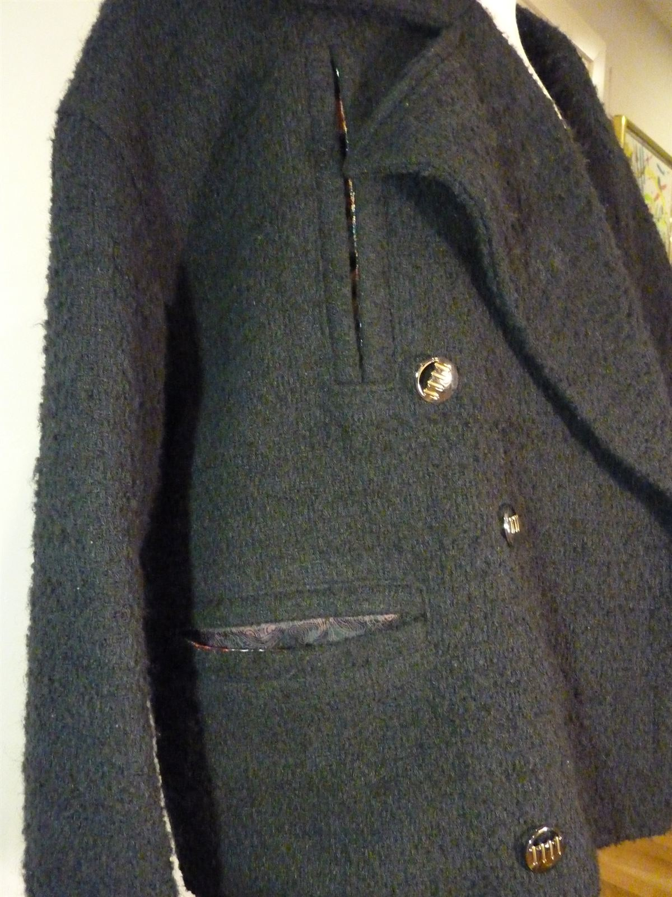
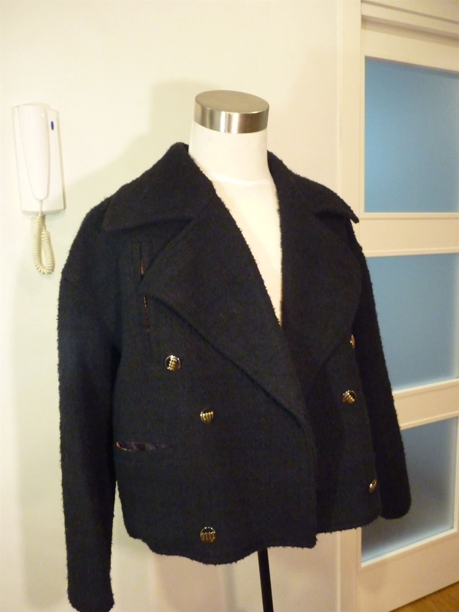
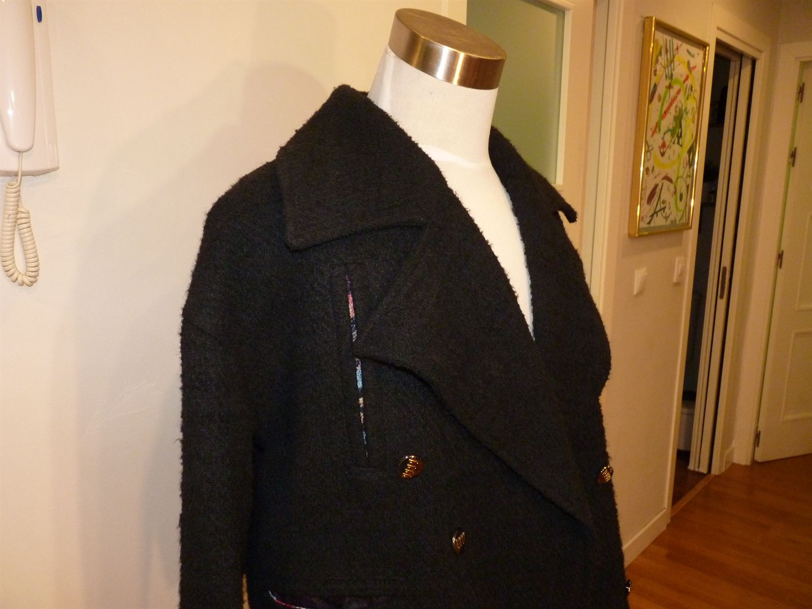
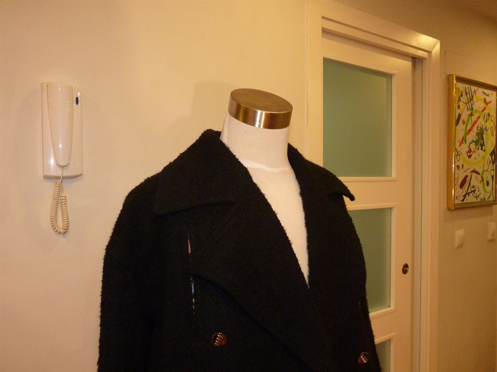
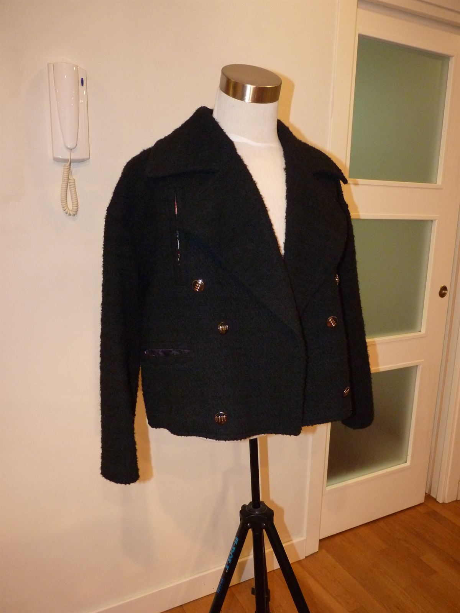

The brief
Armani is structure without stiffness. I wanted to see how a short, boxy jacket keeps its shape while the cloth stays soft to the hand.
The pattern
Adapted from a jacket block and cropped at the high hip. I fused the fronts with a light interlining, added a narrow shoulder pad and bagged a printed lining, so the inside is as finished as the outside.
Spec
- Year
- 2024
- Reference
- Cropped double-breasted jacket, Emporio Armani
- Pattern
- Adapted from a jacket block
- Materials
- Black wool bouclé, printed viscose lining
- Build time
- Three weeks
- Where it is
- In my wardrobe
What I learned
Bouclé moves when it is fused, and my first fronts came out wavy. I learned to test every interlining on offcuts before it touches the real pieces.